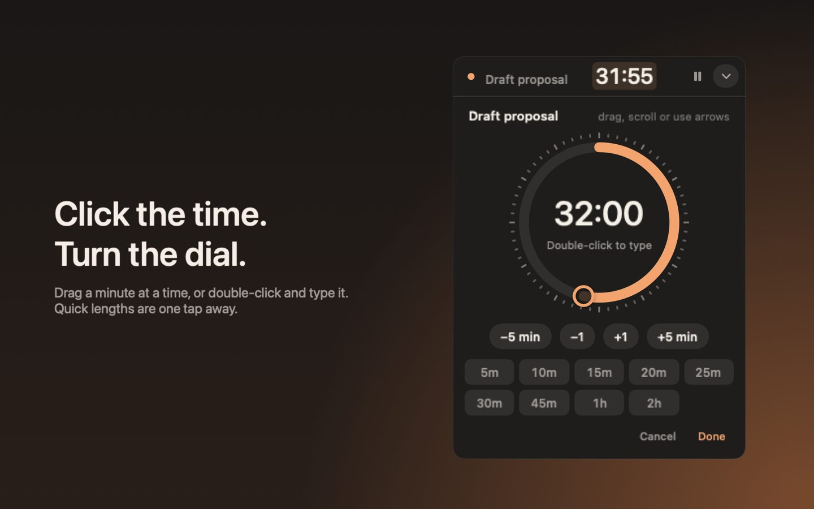
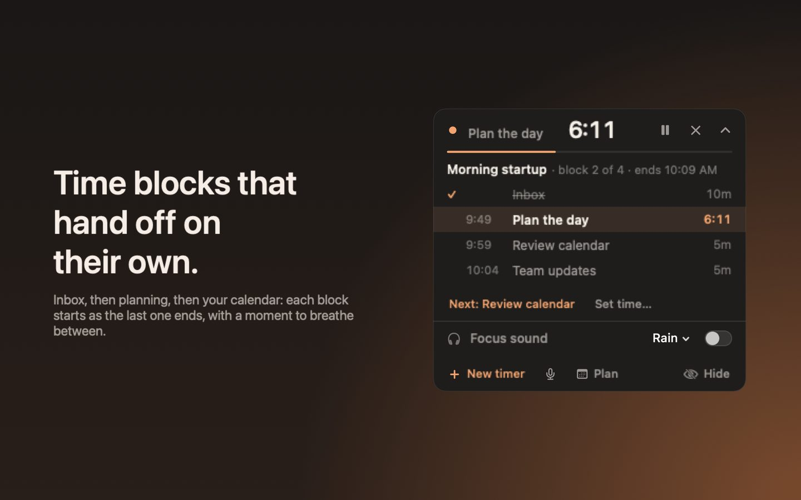
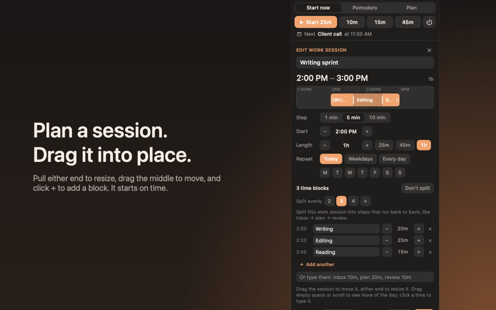
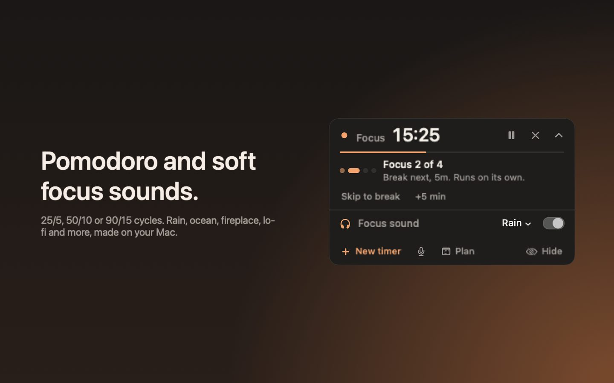

Everything Drift does.
The whole app, feature by feature. One price includes all of it.
Start a timer
Press ⌥ Space in any app. Write what you're doing and for how long, then press Return.

- Write it the way you'd say it. Durations light up orange, times of day blue, so you can see Drift understood.
- Or say it. Press ⌥ Space twice, or click the mic. Speech is recognised on your Mac.
- One tap from the widget. With nothing running, choose Start now, Pomodoro or Plan; Start 25m or a quick length starts straight away.
- Name it later. Click "Name it" on a running timer and type, or tap the mic and say what it's for.
The widget
A small timer in the corner of your screen. It never takes focus from the app you're working in.

- Change the time without stopping. Click it for the dial, double-click to type, or use −5 / +5 min.
- Run several timers at once. The others line up underneath.
- Hide it with ⌥ T. The time moves to the menu bar until you bring it back.
- Drag it anywhere. It follows you across Spaces and over full-screen apps.
Time blocks
One session, several steps, back to back.

- Type them in one line: "Morning startup: inbox 10m, plan the day 10m, review 5m".
- They hand off on their own, with a short card saying what's next and a moment to breathe.
- Split any session evenly into 2, 3, 4 or more blocks, then rename or resize each one.
- Save a session by name and start it again in one click from the menu bar.
Plans and routines
Plan a work session for later today, or make it repeat.

- Drag it onto the timeline. Move the session, pull either end to resize, step by 1, 5 or 10 minutes.
- Routines for weekdays, every day or the days you pick.
- It starts on time. Drift asks Start, In 5 min or Skip; if you're busy it starts by itself after a minute.
- Today at a glance in the expanded widget and the menu bar.
Time's up
Hard to miss, easy to dismiss.
- A soft chime and a notification, plus a gentle nudge and glow on the widget so you see it with the sound off.
- It holds still under your pointer, so Done is one click. Return works too.
- +5 min or Again if you need a little more.
Pomodoro and focus sounds

- 25/5, 50/10 or 90/15 cycles, with a long break after four rounds.
- Focus sounds made live on your Mac: rain, ocean, fireplace, lo-fi, Hush and more, with their own volume.
Make it yours
- Turn off what you don't use. Planning, Pomodoro, focus sounds or voice disappear from every menu.
- Your default length and quick lengths, sounds, and how long the widget waits between blocks.
- Shortcuts, Siri and Raycast through
drift://links: start, pause, resume or extend a timer. - No Dock icon. Everything is also in the menu bar.
Pricing
Every plan includes every feature. You choose a plan before your first timer.
| Plan | Price | Good to know |
|---|---|---|
| Lifetime | $4.99 once | Launch offer only. Yours forever, with every update. |
| Yearly | $9.99 / year | Less than a dollar a month. |
| Monthly | $1.99 / month | Cancel any time in the App Store. |
- Family Sharing on every plan.
- Got Lifetime at launch? It stays yours after the offer ends.
US price shown; the App Store shows your local price.
Privacy
- No account, no analytics, no ads.
- No network access. The app can't reach the internet. Timers, plans and settings stay on your Mac.
- Voice stays local: recognised on-device, only while you're talking, never stored.
- Purchases go through Apple. Drift never sees your Apple ID or payment details.
Questions
Is $4.99 lifetime really forever?
Yes, including every future update. It's only offered during the launch; after that Drift is $1.99/month or $9.99/year, and lifetime buyers keep it.
Is there a free trial?
No. The download is free, and you choose a plan before your first timer. Every plan includes every feature.
How do I cancel a subscription?
In the App Store: your name → Account Settings → Subscriptions. You keep Drift until the end of the period you paid for.
Which Macs does it run on?
macOS 13 Ventura or newer, on Apple silicon and Intel Macs.
I got a new Mac. How do I get Drift back?
Install it from the Mac App Store with the same Apple ID, then Settings → Purchase → Restore Purchases.